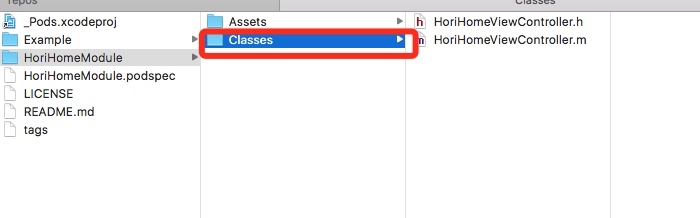
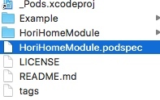
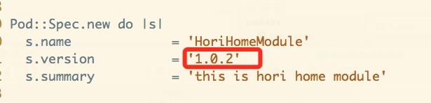

CocoaPods私有库
私有库的创建
前提：需要创建一个仓库作为私有的Spec Repo，可以在gitLab上创建一个私有的Spec Repo。
1、在gitlab上创建完项目后，执行下面命令，把自己的Spec Repo添加到~/.cocoapods/repos目录下
pod repo add 本地仓库名称 gitlab仓库https地址
// 如下
pod repo add gitlab-specs https://chenjiangchuan@gitlab.com/chenjiangchuan/YLBSpecs.git
2、创建Pod项目
pod lib create 项目名称 // 之后会有4步让你选，根据实际需要选择
3、修改Pod项目
- Assets：存放资源
Classes：存放源码，把代码都放在这个文件夹中
修改完后，再Example目录中执行：pod update，就会更新修改的文件。
4、修改.podspec文件
Pod::Spec.new do |s|
s.name = 'HoriFindModule'
s.version = '0.1.0' #每次更新模块版本后，这里也要修改成对应的版本号
s.summary = 'A short description of HoriFindModule.' #这里需要修改
s.homepage = 'https://github.com/chenjiangchuan/HoriFindModule'
// 剩下的就不贴出来了...
修改完后，执行：pod lib lint，如果成功如下所示：
-> HoriFindModule (0.1.0)
HoriFindModule passed validation.
如果报错，根据对应的提示进行修改。
5、确定达到自己需求后，我们就把项目上传到仓库，这里也需要在创建一个仓库：
1. git add .
2. git commit -m "提交版本描述"
3. git remote add origin 项目仓库地址 // 注意，这不是Spec Repo私有库的仓库地址！！
4. git push origin master
5. git tag -m "标签描述" 标签名
6. git push --tags
7. pod repo push 本地仓库名称 xxx.podspec
6、测试，新建一个项目后执行：
pod init
再修改Podfile文件，这里要注意，需要在Podfile文件的最前面添加：
source 'https://github.com/CocoaPods/Specs.git' #官方仓库地址
source 'https://chenjiangchuan@gitlab.com/chenjiangchuan/YLBSpecs.git' #自己的仓库地址
pod 'HoriFindModule'
最后执行：pod install
私有库的更新
1、在Classes文件夹修改代码：

2、修改完后，在对.podspec文件里面的版本进行修改


3、执行命令
pod lib lint
4、在Example目录下执行：
pod update
5、回到上一级目录执行：
git add 修改的文件
git commit -m "本次提交的描述"
git push origin master
git tag -m "标签描述" 标签名
git push --tags
6、把本地的Sepc更新到远程仓库
pod repo push 本地Spec xxx.podspec
7、在对应的项目中使用：pod install进行更新，如果还是下载之前的版本，删除Podfile.lock文件后，再执行pod install。